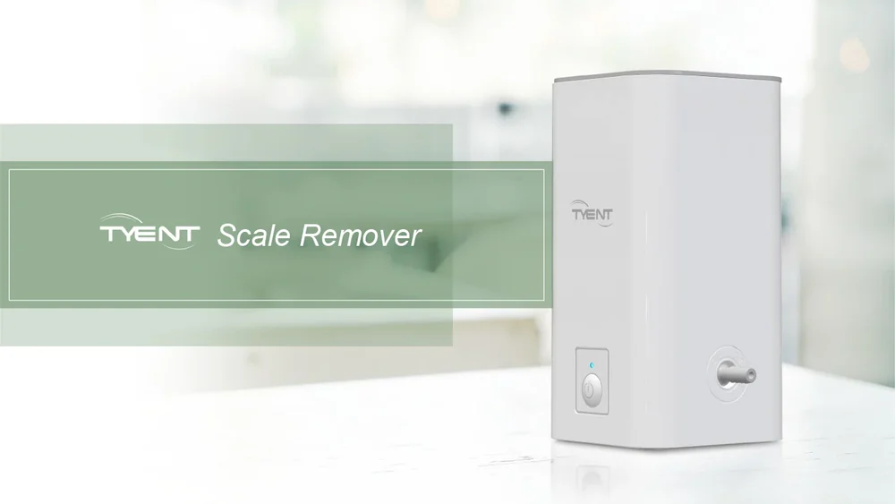
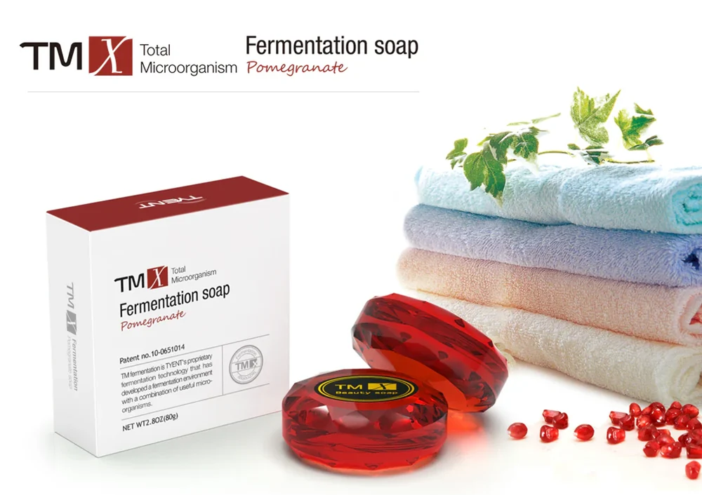

Two-stage replacement filters
Stage 1 carbon and stage 2 ultra-filtration cartridges, matched to your model. Your display tracks litres and reminds you when to change them.
Order filtersCountertop or hidden under the sink, five plates or thirteen. Compare the range, then book a water test and we will help you choose.

At a glance
Every Tyent filters, ionizes and gives you acidic, purified and alkaline water. The differences are plate count, screen, and where the machine lives.
| Model | Installation | Plates | Controls | Stand-out feature | Best for |
|---|---|---|---|---|---|
| ACE-13 | Countertop | 13 | Colour touchscreen, jog dial | Most plates on the counter | Families who want the best on show |
| H2-Hybrid | Countertop | Hybrid cell | Illuminated dial, colour LCD | Hydrogen water mode | Hydrogen-rich drinking water |
| UCE-13 Plus | Under-counter | 13 | Touchscreen faucet | Four faucet finishes | Modular kitchens, clear counters |
| NMP Series | Countertop | 5, 7, 9 or 11 | Wide LCD, start button | Choose your plate count | Matching size to household |
| Q-Series | Countertop | Ask our team | Soft-touch panel | Eco mode | Simple, energy-saving use |
Specifications are indicative and will be confirmed by Tyent India. Ask for current prices during your home demo.
Filters & accessories
Genuine Tyent filters and care products, delivered to your door when your machine says it is time.
Stage 1 carbon and stage 2 ultra-filtration cartridges, matched to your model. Your display tracks litres and reminds you when to change them.
Order filtersGuards the plates and pipes against calcium build-up in hard-water cities.

A fermentation soap made to pair with acidic water in your skincare routine.

Book a free home demonstration. A Tyent specialist will test your water and show you every setting.